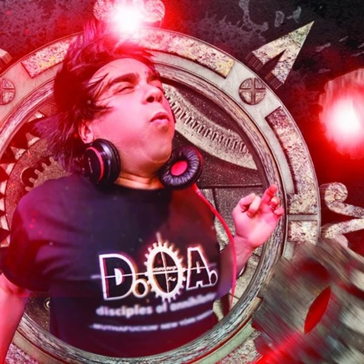

Hardcore is a family of fast, forceful styles of Electronic Dance Music that developed around the early 1990s rave scene. The name covers a surprisingly wide range of music. British Breakbeat Hardcore was built around frantic sampled drums and bright electronic hooks, while Dutch Hardcore and Gabber pushed repetitive kick drums towards distortion and extreme volume. Some branches became even faster and harsher, while others embraced upbeat melodies and sentimental vocals. The styles do not all share a single rhythm, but they approach dance music with a similar disregard for restraint. Hardcore is generally made for crowded clubs and raves, where the impact of the bass and drums matters as much as what comes through a pair of headphones. It can sound confrontational to an outsider, although that tells you surprisingly little about whether the crowd is there to feel angry or simply to have a good time.
The word Hardcore was already familiar long before electronic producers adopted it. It described the most committed supporters of something, and it had also become associated with a faster, more aggressive branch of Punk. In early rave culture, the term suited records that seemed determined to push the speed and intensity of House and Techno further. The difficulty is that this was happening in several places at once. In Britain, Hardcore often referred to music built around sped-up breakbeats and samples. In the Netherlands, it became closely associated with pounding, distorted kick drums and the Gabber scene. Neither group had consulted the other about a proper definition, so the name stuck to both. That is why a reference to Hardcore can describe quite different music depending on the country and the decade. It is also why the word alone does not tell you whether somebody means electronic dance music or Hardcore Punk.
Hardcore took shape as rave music was changing quickly at the turn of the 1990s. British producers were speeding up sampled Funk and Hip Hop drum breaks, combining them with electronic basslines and sounds borrowed from House and Techno. The resulting Breakbeat Hardcore filled warehouses and clubs, but it did not stay together as one style for long. Some producers moved towards the heavier bass and chopped rhythms of Jungle, while others developed the more melodic approach of Happy Hardcore. Meanwhile, the Dutch scene built its own identity around exceptionally hard kick drums. Rotterdam became closely associated with Gabber, which grew from local clubs into a major youth movement during the decade. Other European scenes pushed the sound in their own directions. By the late 1990s, Hardcore had become a family of related traditions rather than a single rave sound. New production technology gave later producers more control over distortion and speed, although the central idea of making the music hit harder was never in much danger of being forgotten.
Hardcore tends to be fast, loud and built around percussion with a considerable physical impact. In many European styles, the kick drum is the main attraction. Producers distort and reshape it until it carries both the beat and much of the low end. The rhythm can be relentlessly regular, with each kick landing firmly on the pulse, while synthesisers and vocal samples provide shorter phrases above it. British Breakbeat Hardcore approaches the drums differently. Its sampled breaks are chopped into restless patterns that move around the beat instead of simply marking every pulse. Melodic styles may bring in bright chords or pitched-up vocals, while darker forms leave much less room for anything beyond rhythm and texture. Breakdowns and sudden changes in intensity are common because the music developed for DJs and dancers. Hardcore is not defined by a single tempo or production technique. What connects its different branches is the decision to treat an already energetic kind of music as a starting point rather than a limit.

Hardcore gave rave communities a sound that belonged largely to them, even when the rest of society found the whole business difficult to understand. Small record labels and specialist shops could release music without waiting for radio stations to approve of it. Fans built their own scenes around local venues, parties and styles of dancing. In Britain, the authorities responded to free-party culture with growing restrictions, including a 1994 law that famously singled out certain gatherings playing music with repetitive beats. It was an unusually formal way of admitting that young people dancing in fields had become a political concern. In the Netherlands, Gabber developed into a recognisable youth culture that was both celebrated and stereotyped in the press. Not every part of these scenes was free from prejudice or exclusion, and their commercial success brought its own arguments about authenticity. Still, Hardcore showed that electronic music could develop sizeable communities outside the usual channels of popular culture. The speed was only one part of what made those communities hard to ignore.